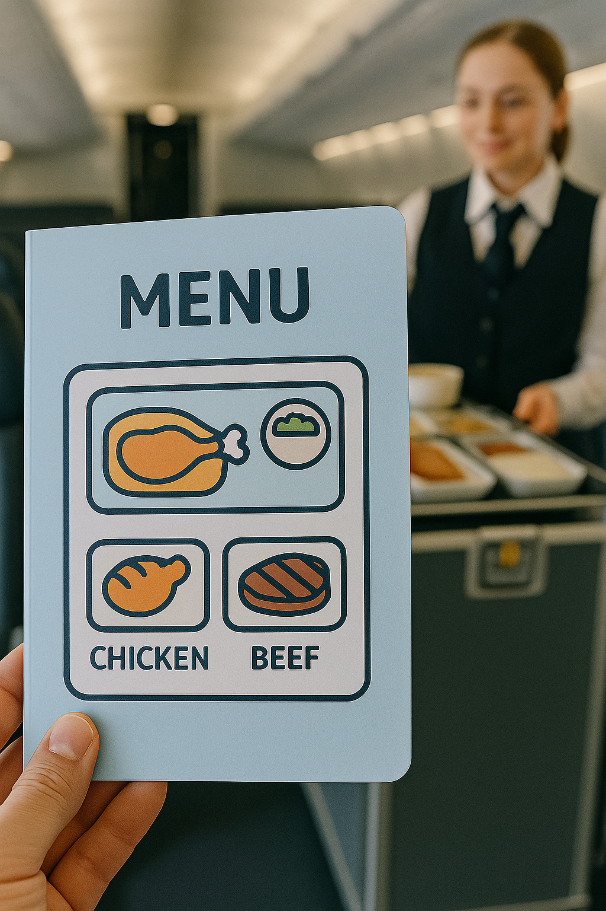

✈️ 成功飛美國
第一關: 關於機票 🎫
🔊 聽題目
LAX (洛杉磯)
JFK (紐約)
SFO (舊金山)
TPE (台灣)
第二關:💺
🔊 聽題目
I’m going to Los Angeles.
Yes, I have a passport.
It’s 24A.
I like window seats.
第三關: 海關查驗 👮
🔊 聽題目
Yes, here you are.
No, I don’t like passports.
I’m flying to Tokyo.
My seat is 12A.
第四關: 在機上點餐 🍽️

🔊 聽題目
Chicken
Beef
第五關: 入境提問 🛃
🔊 聽題目
Two weeks
Forever
Not sure
🎉 任務完成！ Mission Accomplished! 🎉
🥳 你已成功飛抵美國！恭喜你完成所有關卡！ 🥳
Welcome to the USA!
📚 前往學習單字
🗣️ 開始口說練習